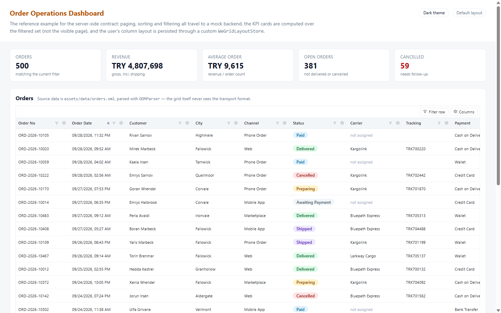
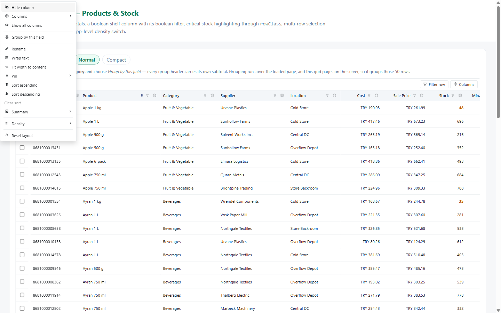
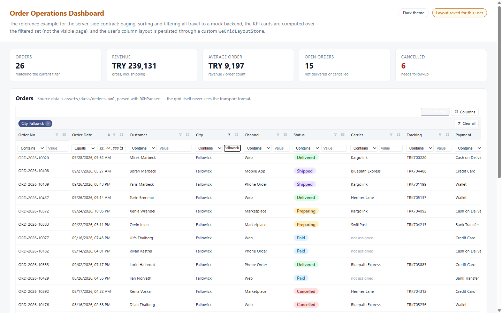
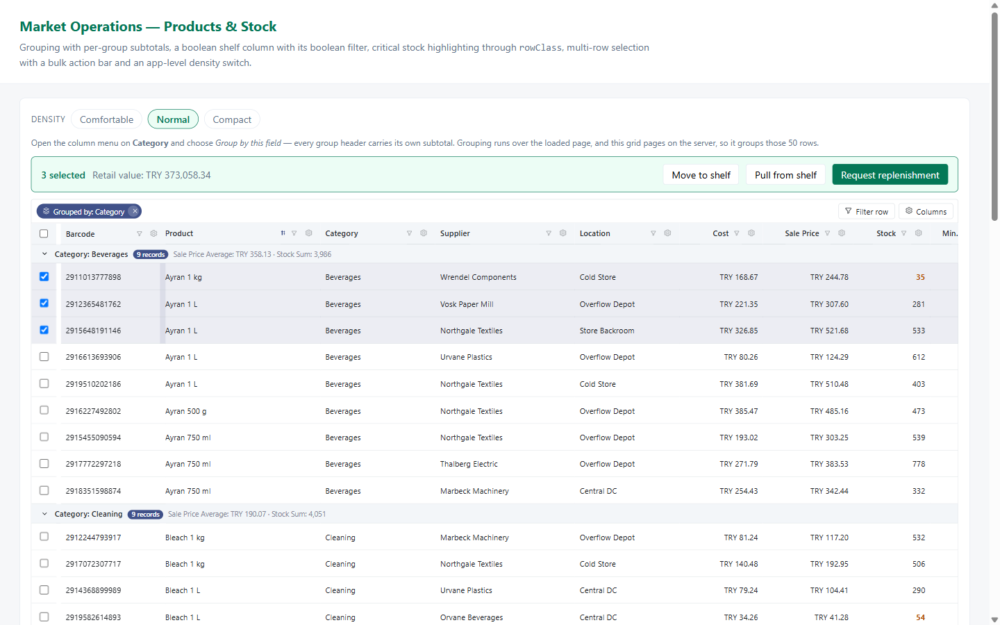
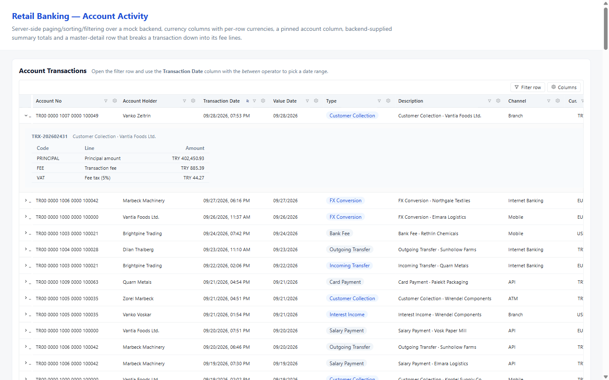
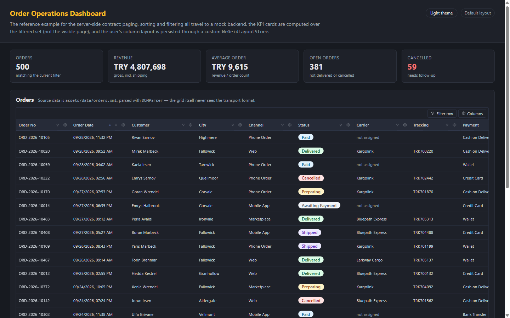
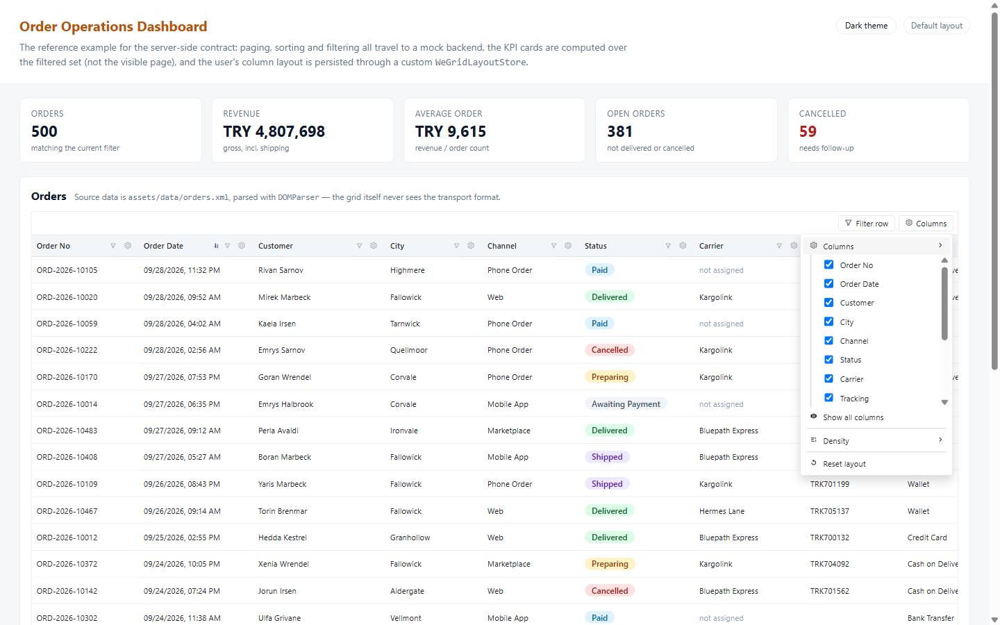

500 orders, one page at a time
The grid never pages by itself. It renders the rows you hand it and reports what the user asked for — page, sort, filter — as events. Here the mock backend answers each one, and the KPI cards above the grid are computed over the whole filtered set, not the 25 visible rows.

Everything the end user is allowed to change
Right-click a header — or use the gear button on it — and the whole column vocabulary is there: hide, rename, pin, sort, fit width to content, pick a subtotal function, switch density, group by this field, reset. No host-app wiring; the grid owns this menu.

Filter row, chips, and totals that follow
Each column gets an operator and a value; active filters collapse into removable chips
above the header. Typing Fallowick into City takes 500 orders down to 26 —
and because the backend recomputes them, the revenue and cancellation figures move with
it. The pill on the right flips once a layout has been saved for this user.

Grouped, subtotalled, and selected
Grouping by a column turns the body into collapsible sections, each header carrying its own subtotals — here a sale-price average and a stock sum per category. Selection is the host app's business: the grid reports it, the sample turns it into a bulk action bar with the retail value of what is ticked.

A row that opens into its own breakdown
Master-detail is an Angular template you project into the grid, so the detail area is ordinary markup in your component with your own styles applied. The account number column stays pinned to the left while the rest of the table scrolls sideways under it.

Dark mode is one attribute
Every colour in the grid is a --we-grid-* custom property. Setting
data-theme="dark" on any ancestor switches the whole set; leaving it off
follows the operating system instead. There is no theme input, no second stylesheet, and
nothing to rebuild — override the properties and the grid is in your brand.

The layout belongs to the user, not the code
Which columns are visible, how wide they are, what they are called, where they are pinned
and in what order — all of it is saved under the grid's gridKey and restored
on the next visit. localStorage is the default; implement one interface and it goes to
your backend per user instead.
